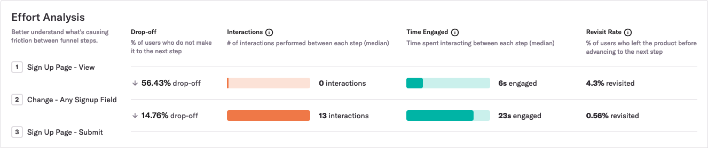
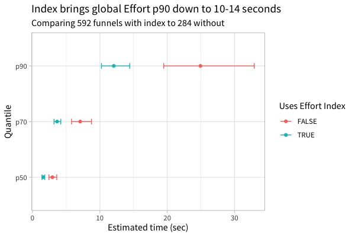

Note: This post was originally published on heap’s blog
Heap is a digital insights platform that automatically captures web and mobile behavior like page views, clicks, and taps. We recently shipped Effort Analysis, a way for Heap customers to see the median number of interactions and seconds engaged between each step within a funnel. Here’s what it looks like:

To build this feature, we needed to write a query that could quickly scan more than a billion rows of event data. But when we first started working on this feature, it took too long to scan the data.
Fortunately, we found a way to double the speed of this feature’s p90 performance. To do this, we had to work around a case where the Postgres planner is, according to the Postgres docs, “not very smart.” This Postgres quirk surprisingly prevented an existing index from supporting an index-only scan. This post is about the quirk that caused our performance problem and the workaround we leveraged to achieve a 2x performance win.
What’s an index-only scan?
First, a quick refresher on index-only scans. An index is a secondary data structure in your database that the query planner can use to make some queries faster. For example, an index on the user_id column can make lookups of a specific user_id faster. An index-only scan is a special kind of operation in which the database can satisfy a query with just the information that’s in the index, without having to read the table’s actual rows.
For example, a typical index at Heap contains the time of an event and the user_id of the user who performed that event:
CREATE INDEX heap_index ON events (time, user_id);
That index is created on a table with a schema like this one:
CREATE TABLE events (time bigint, user_id bigint, data jsonb);
Given this table and index, the query planner would use an index-only scan for a query like SELECT user_id FROM events WHERE time > now() - ‘7 days’::interval because the only value we need, user_id, is in the index.
For a slightly different query like SELECT * FROM events WHERE time > now() - ‘7 days’::interval, the query planner couldn’t use an index-only scan because we need columns that are not in this index. The planner may1 use an index scan instead.
An index scan, as the name implies, scans the index for rows that satisfy the query predicate. However, it also reads in pages of data from the table itself to return and/or perform computations on values that aren’t in the index. This additional step often makes index scans slower than index-only scans.
Our performance problem
Many of our clients record more than 100 million events a week, meaning a 90-day funnel would require scanning more than a billion rows. As a result, the p90 for the query was about 20 seconds, much slower than we wanted for our initial launch. Here’s a simplified version of the initial query that powered Effort Analysis:
SELECT step_num,
PERCENTILE_CONT(0.5) WITHIN GROUP (ORDER BY num_actions) AS num_actions,
PERCENTILE_CONT(0.5) WITHIN GROUP (ORDER BY time_engaged) AS time_engaged
FROM users_funnel_events
WHERE data ->> 'type' IN ('click', 'change', 'touch')
AND time > now() - '7 days'::interval
GROUP BY step_num
Initially, the query that powered Effort Analysis wasn’t using an index-only scan. This surprised us because we had an index that looked like the following:
CREATE INDEX effort_analaysis_index ON users_funnel_events ((data ->> 'type'), time) INCLUDE (num_actions, time_engaged, step_num)
The reason this index didn’t yield an index-only scan is because of a surprising Postgres quirk.
The quirk: functions and operators can prevent index-only scans
Here’s what was happening: although data ->> ‘type’ is in the index, the query planner thinks it also needs to have data in the index, even though data itself isn’t ever referenced in the query except as a part of the data ->> ‘type’ expression. If that doesn’t seem like a smart way for the planner to work, the Postgres documentation agrees with you:
“PostgreSQL’s planner is currently not very smart about such cases.”
This problem arises any time a query uses a function or operator on a column. (Operators are just syntactic sugar for functions.2) If your query references f(x), you must include f(x) and x in your index to get an index-only scan. This isn’t a random hack; it’s the suggested workaround for this issue in the Postgres docs.
However, in our case, x is data, and because data contains most of the data associated with an event (e.g., type, page url where event occurred, etc.),3 this workaround would result in an unacceptably large index.
The workaround: predicates of partial indexes can enable index-only scans
We’ve just seen that if your query includes a column as a function parameter or operand, it doesn’t matter if that column is in the index; you still won’t get an index-only scan. If, however, your column is only used in a predicate that matches the predicate of the partial index, the planner is smart enough to realize that it doesn’t need to visit the table to filter down the result, even if your column is a function parameter or operand.4
This is the workaround we leveraged for our performance win. To better understand it, let’s look at how it applies to our above example query. Notice that in our example query, we only reference data ->> ‘type’ in the WHERE clause of the query. We aren’t actually returning the value of data ->> ‘type’. So the only reason Postgres would need to visit the table would be to ensure that data ->> ‘type’ IN (‘click’, ‘change’, ‘touch’) is true for each row of the returned result, but because of how partial indexes are constructed, this visit isn’t necessary.
As a refresher, partial indexes only contain entries for rows that match a predicate. For example, this partial index only contains entries where data ->> ‘type’ IN (‘click’, ‘change’, ‘touch’):
CREATE INDEX effort_analysis_index ON users_funnel_events (time) INCLUDE (num_actions, time_engaged, step_num) WHERE ((data ->> 'type') IN ('click', 'change', 'touch'))
Because Postgres knows that ea_index only has entries where data ->> ‘type’ IN (‘click’, ‘change’, ‘touch’), a query like: SELECT time FROM funnel_events WHERE data ->> ‘type’ IN (‘click’, ‘change’, ‘touch’ would result in an index-only scan.
Our example query references the columns step_num, time, num_actions, time_engaged, and data. step_num, time, num_actions, and time_engaged are in the index, and data is only referenced in the where clause via data ->> ‘type’ IN (‘click’, ‘change’). Because the query predicate matches the partial index predicate, the planner knows that the index only contains values that satisfy the query predicate, and it doesn’t need to visit the table to filter down the results of scanning the index. Thus, we wind up with an index-only scan for our example query.
The performance win
This workaround lead to a 2x p90 performance improvement for Effort Analysis, and it made our p70 and p50 query faster as well:

Only after looking at these results did we fully understand the quirk that caused this performance issue and the workaround that solved it. In some sense, we got lucky. We hope that by sharing these Postgres facts, other teams can be more deliberate about improving the performance of their queries.
If you like nerding out about optimizing Postgres and/or citus queries, @-me on Twitter @philosohacker, and if you’re not getting enough opportunities to optimize queries at your current gig, we’re hiring! Check out our team and open roles.
I’d like to thank John Krauss, Dave Robinson, and Dan Robinson for their help with reviewing early drafts of this post.
Notes:
-
Whether Postgres uses an index scan or a sequential scan depends on the percentage of rows it anticipates it will need to fetch from the table. ↩︎
-
This is noted in the “User Defined Operators” chapter of the Postgres docs. ↩︎
-
We know that there are lots of downsides to relying this heavily on a JSONB column. ↩︎
-
The docs have a nice example demonstrating this fact. ↩︎